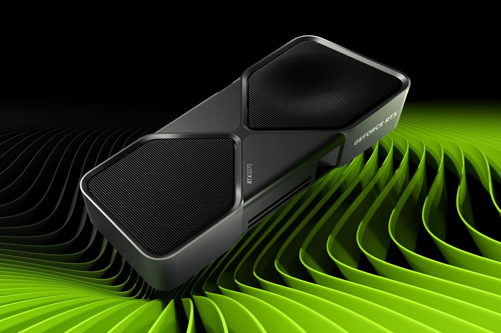

KOMPAS.com - Ketika Nvidia memperkenalkan GeForce RTX 5070 pada awal 2025, kartu grafis (GPU) ini cukup menyita perhatian karena ditawarkan dengan harga mulai 549 dollar AS (sekitar Rp 9,8 juta).
Namun, lebih dari setahun setelah diperkenalkan, harga RTX 5070 di pasaran justru semakin jauh dari harga awal yang diumumkan Nvidia.
Meta Business Agent bisa dibilang seperti "karyawan AI" yang dapat bekerja 24 jam sehari dan tujuh hari seminggu.
Berdasarkan pantauan harga terbaru di pasar Amerika Serikat (AS), median harga GeForce RTX 5070 pada Agustus 2026 kini mencapai 899,99 dollar AS (sekitar Rp 14,3 juta). Padahal pada Juni lalu, median harga RTX 5070 masih berada di kisaran 659,99 dollar AS (sekitar Rp 10,5 juta).
Artinya, hanya dalam waktu sekitar dua bulan, median harga RTX 5070 melonjak sekitar 36 persen atau bertambah 240 dollar AS (sekitar Rp 3,8 juta).
Jika dibandingkan dengan harga resmi saat diperkenalkan Nvidia sebesar 549 dollar AS (sekitar Rp 9,8 juta), harga pasar RTX 5070 saat ini bahkan sekitar 64 persen lebih mahal.
Update Harga BBM Pertamina Terbaru Agustus 2026 di Seluruh Indonesia Mitos Khasiat Telur Penyu Berujung Pembantaian, Bagaimana Melindunginya? Artikel Kompas.id Artinya, hanya dalam waktu sekitar dua bulan, median harga RTX 5070 melonjak sekitar 36 persen atau bertambah 240 dollar AS (sekitar Rp 3,8 juta). BACA JUGA : Demam AI Bikin Laba Samsung Melejit 19 Kali Lipat, Siap Salip Nvidia Valuasi Nvidia Anjlok Rp 18.046 Triliun, Kembali ke Level sebelum Demam AI Nvidia Bentuk Aliansi Keamanan AI setelah Agen OpenAI Bobol Hugging Face Baca juga: Keponakan CEO Nvidia Bilang Harga GPU Terancam Naik Lagi Jika dibandingkan dengan harga resmi saat diperkenalkan Nvidia sebesar 549 dollar AS (sekitar Rp 9,8 juta), harga pasar RTX 5070 saat ini bahkan sekitar 64 persen lebih mahal. Kondisi ini membuat RTX 5070 semakin jauh dari posisi awalnya sebagai salah satu kartu grafis Blackwell yang relatif terjangkau untuk gamer. Ketika diumumkan di ajang Consumer Electronics Show (CES) 2025, Nvidia memosisikan RTX 5070 sebagai GPU dengan arsitektur Blackwell yang menawarkan performa lebih tinggi dibandingkan generasi sebelumnya.
Nvidia saat itu mengumumkan RTX 5070 dengan harga mulai 549 dollar AS, sedangkan RTX 5070 Ti dipatok mulai 749 dollar AS. Kini, harga RTX 5070 di pasar bahkan sudah melampaui harga resmi RTX 5070 Ti tersebut.
Harga RTX 50 naik ramai-ramai
Kompas.com Tekno Hardware Harga GPU RTX 5070 Makin Jauh dari Janji Awal Nvidia Kompas.com, 12 Agustus 2026, 11:32 WIB Baca di App Bill Clinten, Reska K. Nistanto Tim Redaksi Add to Google Lihat Foto Sumber: Toms Hardware KOMPAS.com - Ketika Nvidia memperkenalkan GeForce RTX 5070 pada awal 2025, kartu grafis (GPU) ini cukup menyita perhatian karena ditawarkan dengan harga mulai 549 dollar AS (sekitar Rp 9,8 juta). Namun, lebih dari setahun setelah diperkenalkan, harga RTX 5070 di pasaran justru semakin jauh dari harga awal yang diumumkan Nvidia. Baca berita tanpa iklan. Gabung Kompas.com+ Berdasarkan pantauan harga terbaru di pasar Amerika Serikat (AS), median harga GeForce RTX 5070 pada Agustus 2026 kini mencapai 899,99 dollar AS (sekitar Rp 14,3 juta). Padahal pada Juni lalu, median harga RTX 5070 masih berada di kisaran 659,99 dollar AS (sekitar Rp 10,5 juta). Update Harga BBM Pertamina Terbaru Agustus 2026 di Seluruh Indonesia Mitos Khasiat Telur Penyu Berujung Pembantaian, Bagaimana Melindunginya? Artikel Kompas.id Artinya, hanya dalam waktu sekitar dua bulan, median harga RTX 5070 melonjak sekitar 36 persen atau bertambah 240 dollar AS (sekitar Rp 3,8 juta). BACA JUGA : Demam AI Bikin Laba Samsung Melejit 19 Kali Lipat, Siap Salip Nvidia Valuasi Nvidia Anjlok Rp 18.046 Triliun, Kembali ke Level sebelum Demam AI Nvidia Bentuk Aliansi Keamanan AI setelah Agen OpenAI Bobol Hugging Face Baca juga: Keponakan CEO Nvidia Bilang Harga GPU Terancam Naik Lagi Jika dibandingkan dengan harga resmi saat diperkenalkan Nvidia sebesar 549 dollar AS (sekitar Rp 9,8 juta), harga pasar RTX 5070 saat ini bahkan sekitar 64 persen lebih mahal. Kondisi ini membuat RTX 5070 semakin jauh dari posisi awalnya sebagai salah satu kartu grafis Blackwell yang relatif terjangkau untuk gamer. Ketika diumumkan di ajang Consumer Electronics Show (CES) 2025, Nvidia memosisikan RTX 5070 sebagai GPU dengan arsitektur Blackwell yang menawarkan performa lebih tinggi dibandingkan generasi sebelumnya. Baca berita tanpa iklan. Gabung Kompas.com+ Nvidia saat itu mengumumkan RTX 5070 dengan harga mulai 549 dollar AS, sedangkan RTX 5070 Ti dipatok mulai 749 dollar AS. Kini, harga RTX 5070 di pasar bahkan sudah melampaui harga resmi RTX 5070 Ti tersebut. Harga RTX 50 naik ramai-ramai Kenaikan harga bukan hanya dialami RTX 5070. Sejumlah GPU Nvidia GeForce RTX 50 series lainnya juga mengalami lonjakan harga di AS. Berdasarkan data median listing Newegg yang dihimpun Tom's Hardware, RTX 5060 Ti 16 GB mengalami kenaikan paling tinggi. Median harganya naik sekitar 39 persen, dari 569,99 dollar AS pada Juni menjadi sekitar 804,99 dollar AS pada Agustus. RTX 5060 juga mengalami kenaikan sekitar 27 persen, dari 369,99 dollar AS menjadi 469,99 dollar AS. Sementara RTX 5060 Ti 8 GB naik sekitar 13 persen menjadi 529,99 dollar AS.